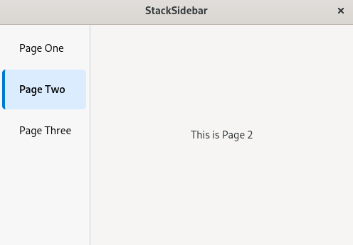

(update:2026/4/30)
Gtk::StackSidebar は、、GTK4 アプリで「サイドバー形式のページ切り替え UI」を作るための専用ウィジェットです。
Gtk::StackSidebar は Gtk::Stack に含まれるページを自動的にリスト表示し、クリックで切り替えられるサイドバーです。
つまり、Stack のコントローラー的なユーザインターフェースを提供するウィジットです。
Stack のページ一覧を読み取り、ページごとのボタンを自動生成します。
void Gtk::StackSidebar::set_stack( Gtk::Widget& child )
Sidebar をクリックすると Gtk::Stack の visible_child が切り替わります。逆に、Stack 側でページを切り替えると Sidebar の選択も追従します。
Gtk::StackSidebar では、CSS でサイドバーの背景・選択色・フォントなどを自由に変更できます。
Gtk::Stack に表示するページを登録し、その後、Gtk::Stack を Gtk::StackSwitcher に結びつけます。
Gtk::StackSidebar、Gtk::Stack を宣言します。
Gtk::StackSidebar::set_stack() を用いて、Gtk::Stack とGtk::StackSidebar の連携を行います。
Gtk::Box::append() を用いて、Gtk::StackSidebar を Gtk::Box に格納します。
#include <gtkmm.h>
class MyWindow : public Gtk::Window {
public:
MyWindow();
virtual ~MyWindow() = default;
private:
void add_page(const Glib::ustring& text,
const Glib::ustring& name,
const Glib::ustring& title);
Gtk::Stack stack;
// 1.child widget の宣言
Gtk::StackSidebar sidebar;
Gtk::Box hbox{ Gtk::Orientation::HORIZONTAL };
};
MyWindow::MyWindow()
{
set_title( "StackSidebar" );
set_default_size( 500, 350 );
// CSS 読み込み
auto provider = Gtk::CssProvider::create();
provider->load_from_path( "style.css" );
Gtk::StyleContext::add_provider_for_display(
Gdk::Display::get_default(), provider,
GTK_STYLE_PROVIDER_PRIORITY_APPLICATION );
// Stack 設定
stack.set_transition_type( Gtk::StackTransitionType::SLIDE_LEFT_RIGHT );
stack.set_transition_duration( 300 );
add_page( "This is Page 1", "page1", "Page One" );
add_page( "This is Page 2", "page2", "Page Two" );
add_page( "This is Page 3", "page3", "Page Three" );
// 2.Gtk::Stack とGtk::StackSidebar の連携
sidebar.set_stack( stack );
// 3.Gtk::StackSidebar を Gtk::Box に格納
hbox.append( sidebar );
hbox.append( stack );
set_child( hbox );
}
void MyWindow::add_page(const Glib::ustring& text,
const Glib::ustring& name,
const Glib::ustring& title)
{
auto label = Gtk::make_managed<Gtk::Label>( text );
label->set_vexpand( true );
label->set_hexpand( true );
stack.add( *label, name, title );
}
int main( int argc, char* argv[] )
{
auto app = Gtk::Application::create( "stacksidebar.example" );
return app->make_window_and_run<MyWindow>( argc, argv );
}
/* Sidebar 全体 */
stacksidebar {
background: #f7f7f7;
border-right: 1px solid #d0d0d0;
}
/* 行の基本スタイル */
stacksidebar row {
padding: 10px 14px;
border-left: 4px solid transparent;
transition: background 150ms ease, border-color 150ms ease;
}
/* ホバー */
stacksidebar row:hover {
background: #ececec;
}
/* 選択行（アクティブページ） */
stacksidebar row:selected {
background: #e6f2ff;
border-left: 4px solid #007acc;
font-weight: 600;
}
/* フォーカス（キーボード操作） */
stacksidebar row:focus {
outline: none;
background: #dcecff;
}

| Copyright (c) Henrry Yamm Project All Rights Reserved. |
|---|